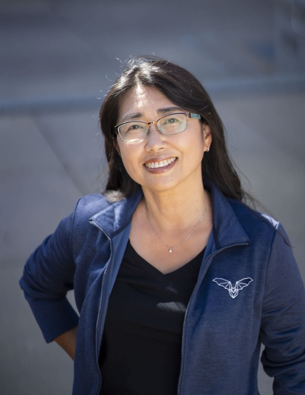
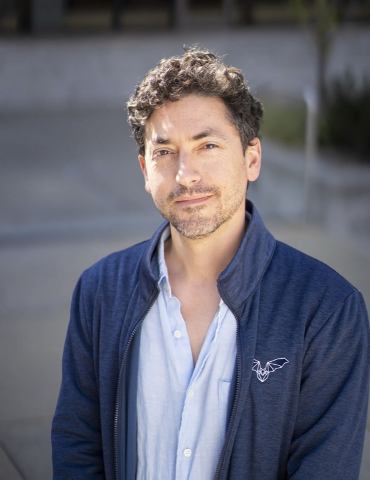
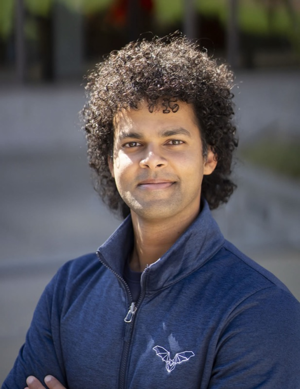
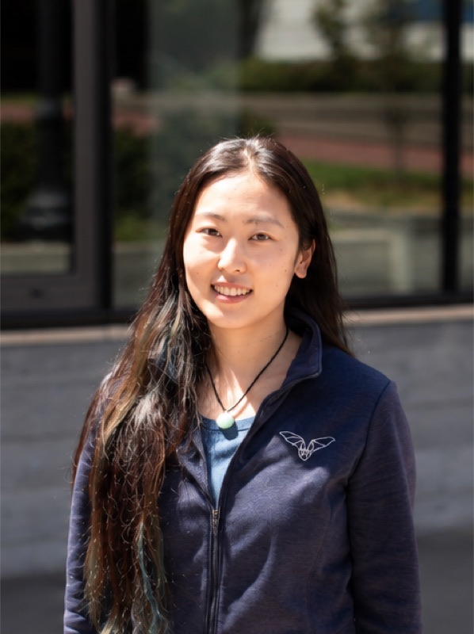
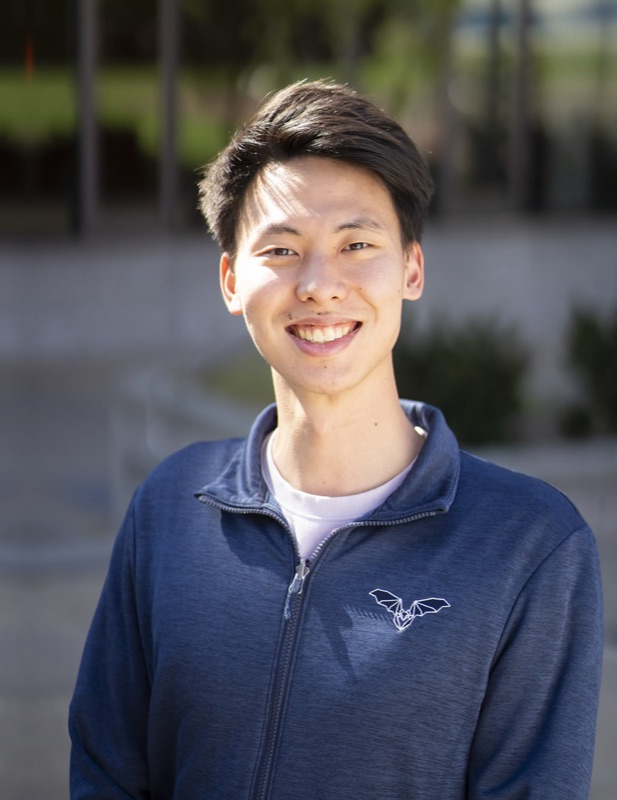
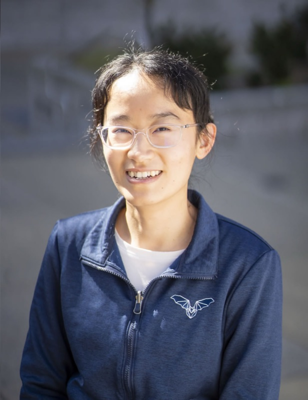
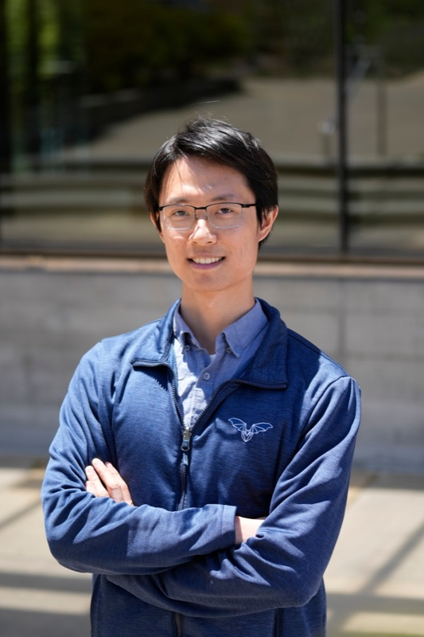
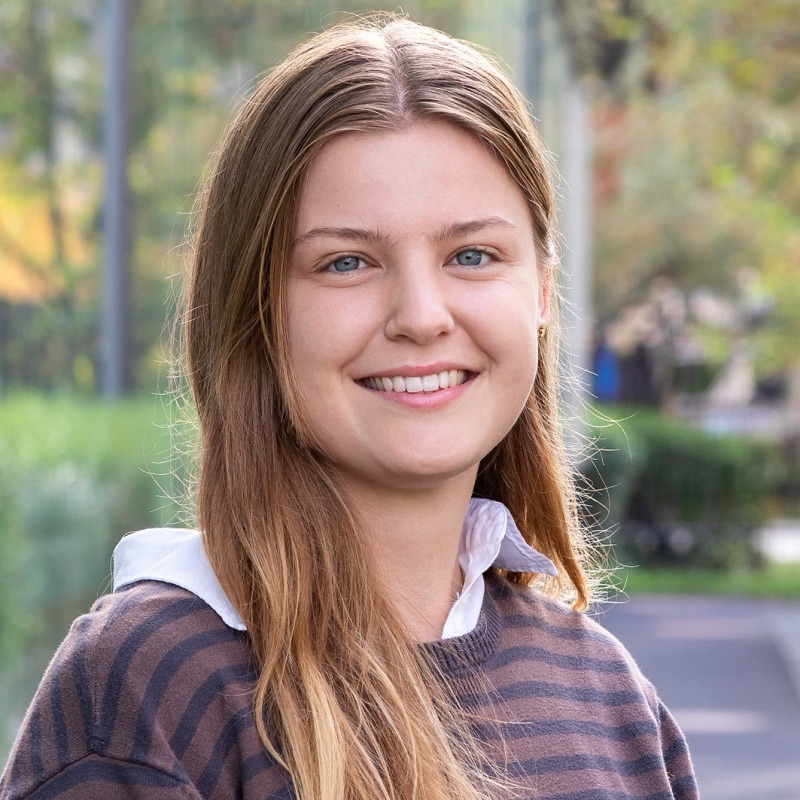

People
The colony
Neuroscientists, engineers, theorists, and every background in between, united by a curiosity about natural intelligence.
Select any profile to learn more.
Principal Investigator
Michael Yartsev, Ph.D.
Professor of Neurobiology and Engineering at UC Berkeley and Investigator of the Howard Hughes Medical Institute.
Guiding Principles · Science & People
Great science with great people.
01 · Science
“Everything should be made as simple as possible, but not simpler.” · Albert Einstein
We adopt this principle in how we design experiments: simplify wherever possible, but never at the expense of the biology, rigor or the scientific question. We seek conditions in which animals can fully engage in their natural behaviors while providing us with experimental rigor and precise measurement.
02 · People
Work with people you respect as scientists and enjoy as people.
Great science depends on great people working together: as a team, not as individuals. And the science is never our only output. The most lasting one is the scientists who grow here and go on to have tremendous impact, in academia, industry, and beyond. We believe in open science, done together, as a community.
Current Team

Yuka Minton
Lab Manager
View profile →

Boaz Styr, Ph.D.
Postdoctoral Researcher · HFSP Fellow · NIH K99/R00
View profile →

Krishna Kasuba, Ph.D.
Postdoctoral Researcher · SNSF Fellow
View profile →

Adam Lowet, Ph.D.
Postdoctoral Researcher · Jane Coffin Childs Fellow
View profile →

Qian Xu, Ph.D.
Postdoctoral Researcher
View profile →

Kevin Qi
Graduate Student · NRSA F31 Fellow
View profile →

Hesper Chen
Graduate Student
View profile →

Yuheng Feng
Graduate Student
View profile →

Laura Vrijbloed
Visiting Scholar
View profile →
Alumni
Where the colony flies next.
Angelo Forli
Postdoctoral Researcher: 2019–2025 · EMBO & HFSP Fellow → Assistant Professor, IIT (Italy)
Will Liberti
Postdoctoral Researcher: 2020–2022 → CEO, Morphosis
Wujie Zhang
Postdoctoral Researcher: 2016–2022 → Senior Machine Learning Engineer, Meta
Nicholas Dotson
Postdoctoral Researcher: 2017–2020 → Scientist, Salk Institute
Wudi Fan
Graduate Student: 2024–2026 → Graduate Student, Frank Lab (UCSF)
Tatsumi Yoshida
Graduate Student: 2022–2025 → Medical residency, Tokyo, Japan
Madeleine Snyder
Graduate Student: 2019–2024 → Post-doc, Gershman Lab (Harvard)
Maimon Rose
Graduate Student: 2015–2021 → Data Scientist, Alto Neuroscience
Tobias Schmid
Graduate Student: 2016–2021 → Senior Associate, Mubadala Capital (VC Biotech)
Julie Elie, Ph.D
Staff Researcher: 2018–2024 → Researcher, Frederic Theunissen Lab (Berkeley)
Daria Genzel, Ph.D
Research Specialist: 2016–2020 → Product Designer & Production Manager, SpikeGadgets
Varvara Shvareva
Undergraduate: 2018–2021 → Graduate Student in Neuroscience, UCSF
Ashley Rakuljic
Undergraduate: 2018–2020 → Medical Student (Doctor of Osteopathy), Pennsylvania
Maria Ji
Undergraduate: 2016–2019 → Medical Student and Surgical Coordinator, Harrison